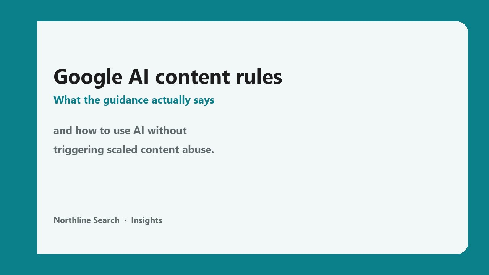

Google's guidance on generative AI content is clear: quality and user value matter more than whether a human or a model typed the words. The risk is not "using ChatGPT." The risk is publishing lots of thin pages that add nothing a person (or an AI answer engine) would choose to trust.
Search Central's page Google Search's guidance on using generative AI content says generative AI is useful for researching a topic and structuring original content. It also warns that generating many pages without adding value may violate the spam policy on scaled content abuse. That is the line that matters.
What Google is (and is not) saying
Google's longer blog post, Google Search's guidance about AI-generated content, makes the same point in plainer language:
- Not banned: appropriate use of AI or automation is not against the guidelines.
- Still spam: using AI primarily to manipulate rankings is a spam violation, the same as older automated content tricks.
- Quality first: ranking systems aim to reward original, helpful content that shows E-E-A-T (experience, expertise, authoritativeness and trustworthiness), however it was produced.
- No AI ranking bonus: using AI does not give content special gains. Helpful content may do well. Unhelpful content may not.
So the headline "Google updated its AI content rules" is easy to oversell. The durable rule is older than ChatGPT: don't mass-produce low-value pages to game search.
Scaled content abuse, in plain English
Scaled content abuse means you create a lot of pages that offer little or no value beyond what already exists. Search Quality Raters guidelines cover this under scaled content and under main content created with little effort, little originality and little added value. Raters do not directly rank your site, but their guidelines show what Google's systems are trained to favour and to demote.
In audits, this often looks like:
- Hundreds of near-identical city or service pages where only the city name changes
- Blog posts that restate the top-ranking article with no prices, process, photos or local detail
- FAQ pages generated in bulk with answers nobody on the team would stand behind
Those pages rarely help classic SEO. They also rarely help answer engine optimization: AI Overviews, ChatGPT and Perplexity prefer passages with clear facts and a reason to trust the source. Ten generic AI pages give a model nothing unique to quote.
The accuracy problem nobody can skip
Generative models predict likely words. They do not look up a fact the way a database does. Google's guidance says AI outputs may contain inaccuracies (hallucinations), and that you must manually fact-check and review AI content before publishing.
That review is not only for the body copy. It also applies to:
- Title tags and meta descriptions
- Structured data / JSON-LD
- Image alt text
In practice: if you would not put the claim on your homepage with your name under it, do not publish it.
A workflow that stays on the right side of the line
Here is how we use AI at Northline, and how we recommend clients use it for local and service sites:
- Start with your knowledge, not a blank prompt. Instead of "write a blog about foundation repair," have the tool interview you: costs you charge, jobs you finished, mistakes homeowners make, cities you actually serve. Feed it transcripts, job notes or a short voice memo.
- Ask for structure first. Outline, headings and the questions customers ask. Then write or heavily edit the answers yourself.
- Add information gain. Prices ranges you stand behind, timelines, warranty terms, photos from real jobs, and local rules. If another site could have written the same paragraph, rewrite it.
- Fact-check every claim. Numbers, laws, medical or financial statements, competitor comparisons. Fix or cut anything you cannot verify.
- Publish fewer, better pages. One strong service page beats twenty thin AI city pages. If you already have thin programmatic pages, prune or merge them rather than spinning more.
- Disclose when readers would expect it. Google suggests saying how content was created when someone might reasonably wonder. Do not list "ChatGPT" as the author byline.
How this connects to SEO, AEO and GEO
SEO is still the base. AEO and GEO build on it. AI answers mostly pull from pages that are crawlable, indexed and trusted. Weak, scaled AI content usually fails all three:
- SEO: thin pages compete with each other, waste crawl budget and rarely earn links or rankings.
- AEO: answer engines need a short, clear answer they can lift. Vague AI filler is hard to quote.
- GEO: ChatGPT, Perplexity and AI Overviews favour consistent facts and third-party trust. Generic copy does not build that footprint.
Also make sure AI crawlers can actually read the pages you do publish. Blocking GPTBot or PerplexityBot on a live site can stop citations even when the content is good. Use our free AI crawler checker, or read how to check whether AI crawlers can read your site.
A 30-minute check for your site
- Open Search Console → Pages. Note how many URLs are "Crawled — currently not indexed." A sudden pile of thin AI pages often shows up here.
- Pick five recent blog or location pages. For each, ask: what unique fact, photo or process would only our business know?
- Search one of those pages' main questions in Google AI Overviews or ChatGPT. If nobody cites you, check whether the answer on your page is clearer than the sources they do cite.
- Confirm AI crawlers are not blocked on production.
Where to start this week
If you only do three things:
- Stop publishing mass AI pages that only change the city or keyword.
- Rewrite your five most important pages so the first two sentences answer the main question with a fact only you can own.
- Fact-check titles, meta descriptions and schema on those pages before you touch anything else.
Google's rules did not make AI forbidden. They made low-value scaling riskier. Treat the model like a fast junior assistant: useful for research and structure, never the final publisher.